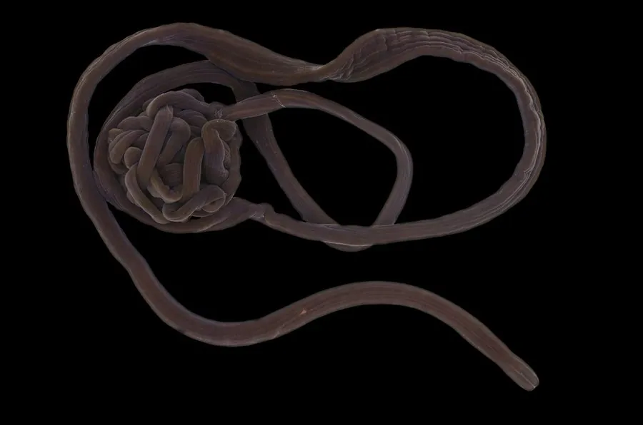

其他无脊椎动物 · 动物界
纽虫 Lineus longissimus

身体细长如鞋带的著名海洋纽虫，长度甚至可达数十米，是世界上最长的动物之一，靠吻部捕食和防御。
- 分类
- 门纽形动物门纲无针纲目异纽虫目科纵沟纽虫科属纽虫属
- 栖息环境
- 东北大西洋的泥沙、石缝和海藻间，夜间活动
- 地理分布
- 东北大西洋沿岸，包括北海和英国沿海
- 保护级别
- 暂无评估
物种志
纽虫的身体极其细长，呈圆柱形或带状，直径只有几毫米，长度却可达 10–30 m 甚至更长，是已知最长的动物之一。体色多为暗褐、紫褐或红褐色，表面光滑，没有分节，身体可以大幅度伸缩和缠绕。
它生活在东北大西洋的泥沙和石缝中，白天藏在洞里，夜间出来活动，取食蠕虫、甲壳动物和腐肉。纽虫最特别的结构是吻部：平时收在体内，捕食或受惊时能迅速翻出，缠绕猎物或吓退敌人。它的身体柔软但结实，断裂后可以再生。纽虫在海洋生态中是底栖捕食者之一，也是研究动物再生和身体结构演化的材料。由于身体细长、行踪隐蔽，野外观察记录并不多。纽虫的吻部表面有黏液和细刺，能牢牢缠住猎物。
形态与习性
- 食性取食蠕虫、甲壳动物和腐肉
- 体长可达 10–30 m，是已知最长的动物之一
- 形态身体细长如鞋带，无分节，可伸缩缠绕
- 吻部可迅速翻出，用于捕食和防御
- 再生身体断裂后可以再生
- 分布东北大西洋沿岸
趣味知识
- 纽虫的身体细长如鞋带，长度可达几十米。
- 它能把藏在体内的吻部迅速翻出来，缠绕猎物或吓退敌人。
- 纽虫没有分节，身体柔软却能保持很长的形态。